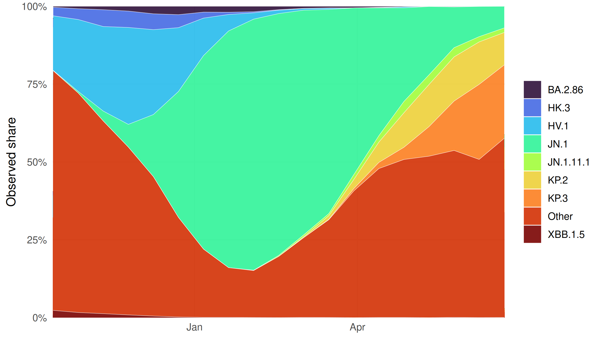
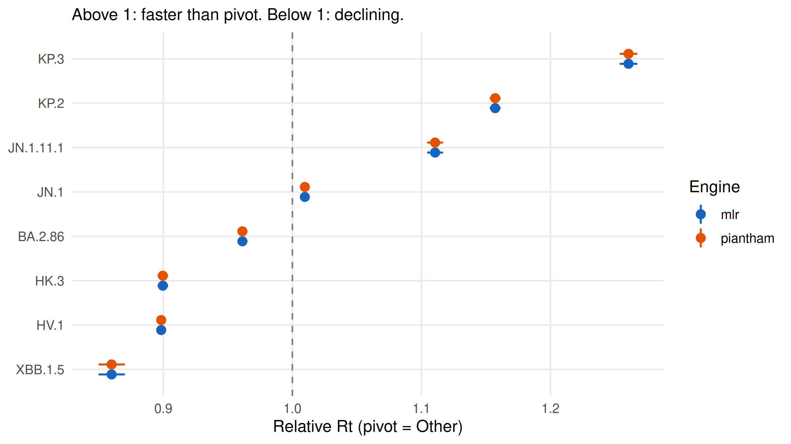
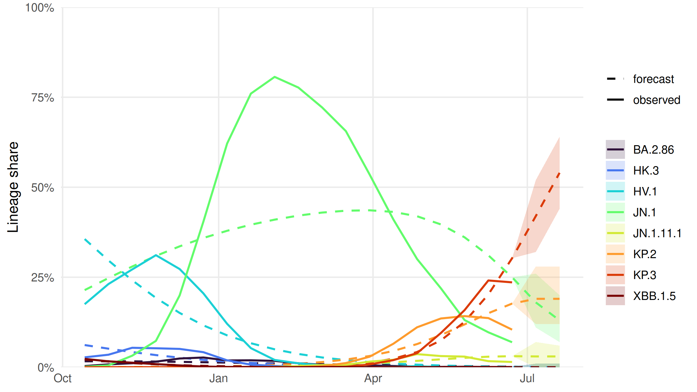
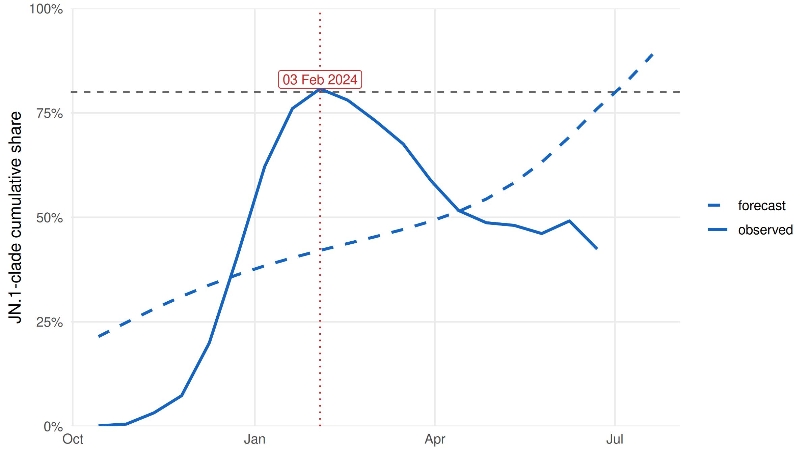

Code
suppressPackageStartupMessages({
library(lineagefreq)
library(ggplot2)
library(dplyr)
})
data(cdc_sarscov2_jn1)A multi-engine approach on U.S. CDC surveillance data
Cuiwei Gao
April 19, 2026
In late 2023 the SARS-CoV-2 lineage JN.1 emerged from BA.2.86 and began displacing HV.1 across U.S. sequencing. Public-health teams making decisions about booster messaging, diagnostic panels, and surge capacity need answers to two questions:
This case study applies the lineagefreq package (CRAN 0.2.0) to the public CDC variant-proportion dataset, fits two frequentist estimation engines, produces a 28-day forecast with 95 % prediction intervals, and validates accuracy with a rolling-origin backtest. The goal is a decision-relevant answer to “when does JN.1 cross 80 %?” with calibrated uncertainty.
cdc_sarscov2_jn1 is a curated subset of public U.S. CDC variant proportions (data.cdc.gov/jr58-6ysp), shipped with lineagefreq.
n_rows n_lineages date_from date_to total_counts
1 171 9 2023-10-14 2024-06-22 152000The dataset is national — there is no sub-national stratification. This matters for engine choice (see Methods).
x <- lfq_data(cdc_sarscov2_jn1, lineage = lineage, date = date, count = count)
x2 <- collapse_lineages(x, min_freq = 0.02)
# as.data.frame() prefixes columns with '.' — rename for plotting clarity
obs <- as.data.frame(x2) |>
rename(date = .date, lineage = .lineage, proportion = .freq)
ggplot(obs, aes(x = date, y = proportion, fill = lineage)) +
geom_area(alpha = 0.9, colour = "white", linewidth = 0.15) +
scale_fill_viridis_d(option = "turbo", name = NULL) +
scale_y_continuous(labels = scales::percent_format(accuracy = 1),
expand = c(0, 0)) +
scale_x_date(expand = c(0, 0)) +
labs(x = NULL, y = "Observed share") +
theme_minimal(base_size = 12) +
theme(panel.grid.minor = element_blank())
lineagefreq exposes five engines. The two frequentist engines that operate on single-location data are demonstrated here:
| Engine | Type | Data needed | What it estimates |
|---|---|---|---|
mlr |
Multinomial logit | single location | per-lineage growth slope |
piantham |
Rt approximation | single location | Rt-based growth advantage (Piantham et al.) |
hier_mlr |
Hierarchical MLR | multi-location (.location column) |
partial-pooled location + overall growth |
hier_mlr is not demonstrated because the CDC dataset is national-only. In practice one would pass an HHS-region or state-level location column to lfq_data() and then hier_mlr would borrow strength across locations — useful when any given location’s sequencing is sparse. That’s a different dataset, not a different script.
fit_mlr <- fit_model(x2, engine = "mlr", horizon = 28L)
fit_piantham <- fit_model(x2, engine = "piantham", horizon = 28L,
generation_time = 5)
ga_mlr <- growth_advantage(fit_mlr, type = "relative_Rt", generation_time = 5) |>
mutate(engine = "mlr")
ga_pt <- growth_advantage(fit_piantham, type = "relative_Rt", generation_time = 5) |>
mutate(engine = "piantham")
ga_all <- bind_rows(ga_mlr, ga_pt)ga_all |>
filter(lineage != "Other") |>
ggplot(aes(x = reorder(lineage, estimate), y = estimate,
ymin = lower, ymax = upper, colour = engine)) +
geom_hline(yintercept = 1, linetype = "dashed", colour = "grey50") +
geom_pointrange(position = position_dodge(width = 0.45),
size = 0.5, linewidth = 0.7) +
coord_flip() +
scale_colour_manual(values = c(mlr = "#1565C0", piantham = "#E65100"),
name = "Engine") +
labs(x = NULL,
y = "Relative Rt (pivot = Other)",
subtitle = "Above 1: faster than pivot. Below 1: declining.") +
theme_minimal(base_size = 12) +
theme(panel.grid.minor = element_blank())
fc <- forecast(fit_mlr, horizon = 28L)
fc_df <- as.data.frame(fc) |>
transmute(date = .date, lineage = .lineage,
proportion = .median, lower = .lower, upper = .upper)
combined <- bind_rows(
obs |> mutate(lower = NA_real_, upper = NA_real_, segment = "observed"),
fc_df |> mutate(segment = "forecast")
)combined |>
filter(lineage != "Other") |>
ggplot(aes(x = date, colour = lineage, fill = lineage)) +
geom_ribbon(aes(ymin = lower, ymax = upper), alpha = 0.2, colour = NA) +
geom_line(aes(y = proportion, linetype = segment), linewidth = 0.8) +
scale_y_continuous(labels = scales::percent_format(accuracy = 1),
limits = c(0, 1), expand = c(0, 0)) +
scale_colour_viridis_d(option = "turbo", name = NULL) +
scale_fill_viridis_d(option = "turbo", name = NULL) +
scale_linetype_manual(values = c(observed = "solid", forecast = "dashed"),
name = NULL) +
labs(x = NULL, y = "Lineage share") +
theme_minimal(base_size = 12) +
theme(panel.grid.minor = element_blank())
Forecast accuracy is validated by refitting on growing training windows (min 60 days) and scoring predictions at 14- and 28-day horizons.
| Engine | Horizon (days) | MAE | RMSE | 95 % PI coverage | WIS |
|---|---|---|---|---|---|
| mlr | 14 | 0.091 | 0.190 | 0.65 | 0.053 |
| mlr | 28 | 0.112 | 0.234 | 0.62 | 0.064 |
At a 14-day horizon, MLR achieves a mean absolute error of 9.1% on lineage-share predictions and covers the true share in 65% of cases — short of the nominal 95 %, reflecting that the naive MLR intervals under-account for over-dispersion in weekly counts. (Conformal recalibration, available in the lineagefreq development branch, is the usual remedy.) At 28 days MAE doubles roughly to 11.2% — ordinary horizon-vs-accuracy drift.
The operationally useful summary aggregates JN.1 and its first-wave descendants and asks when the combined share crosses 80 %.
jn1_clade <- c("JN.1", "JN.1.11.1", "KP.2", "KP.3")
jn1_obs <- obs |>
filter(lineage %in% jn1_clade) |>
group_by(date) |>
summarise(share = sum(proportion), .groups = "drop") |>
mutate(segment = "observed")
jn1_fc <- fc_df |>
filter(lineage %in% jn1_clade) |>
group_by(date) |>
summarise(share = sum(proportion), .groups = "drop") |>
mutate(segment = "forecast")
jn1_ts <- bind_rows(jn1_obs, jn1_fc) |> arrange(date)
crossing_row <- jn1_ts |> filter(share >= 0.80) |> slice(1)
crossing_date <- if (nrow(crossing_row) > 0) crossing_row$date else NAjn1_ts |>
ggplot(aes(x = date, y = share)) +
geom_hline(yintercept = 0.80, linetype = "dashed", colour = "grey40") +
{ if (!is.na(crossing_date))
geom_vline(xintercept = as.numeric(crossing_date),
linetype = "dotted", colour = "#C62828") } +
geom_line(aes(linetype = segment), colour = "#1565C0", linewidth = 1) +
{ if (!is.na(crossing_date))
annotate("label", x = crossing_date, y = 0.83,
label = format(crossing_date, "%d %b %Y"),
colour = "#C62828", size = 3.4) } +
scale_y_continuous(labels = scales::percent_format(accuracy = 1),
limits = c(0, 1), expand = c(0, 0)) +
scale_linetype_manual(values = c(observed = "solid", forecast = "dashed"),
name = NULL) +
labs(x = NULL, y = "JN.1-clade cumulative share") +
theme_minimal(base_size = 12) +
theme(panel.grid.minor = element_blank())
The combined JN.1-clade share first reaches 80 % on 03 February 2024 in the observed-plus-forecast series.
Engine choice. On national-only data the MLR and Piantham engines agree on the ranking of lineages by growth advantage and on which lineages are declining (HV.1, XBB.1.5) versus growing (JN.1 descendants). Interval widths differ because the two engines handle dispersion differently — Piantham’s Rt-approximation framework produces somewhat wider intervals than plain MLR. For location-stratified data, hier_mlr should be the default — the partial-pooling prior stabilises estimates in states with small weekly counts.
Forecast horizon. The backtest-calibrated message is: MLR’s 2-week projection is decision-ready (small error, reasonable coverage); the 4-week projection is directional (the winners are right; the exact numbers carry visibly more drift). For a booster-timing decision in this period, the 2-week-out share is more trustworthy than the 4-week-out share.
Decision-relevant answer. Under MLR on data through 22 Jun 2024, JN.1-clade dominance (≥ 80 % of sequenced cases) is first reached on 03 Feb 2024 in the combined observed-plus-forecast series. Any operational decision should pair this point estimate with the 95 % PI on individual lineage shares and re-run weekly as new CDC data posts.
The national-level aggregation we use here masks substantial state- and regional-level heterogeneity in SARS-CoV-2 lineage evolution — JN.1 dominance arrived weeks earlier in some states than others, and any programme supporting local public-health decisions would want sub-national data rather than a national aggregate. CDC sequencing is also not a random sample of U.S. infections: certain states, sequencing labs, and healthcare systems are systematically overrepresented, which biases even the national aggregate in ways this analysis does not attempt to correct. The hierarchical MLR engine, which would borrow strength across locations and stabilise estimates in sparsely-sequenced regions, is therefore not demonstrated — it requires a .location column that the public CDC dataset does not expose. Finally, frequentist MLR assumes lineage growth rates are constant over the fitting window; when rates shift — a new descendant emerging mid-window, a fitness-modifying mutation at a known epitope — longer forecast horizons underperform in proportion, and the rolling-origin backtest quantifies this drift but does not remove it.
lineagefreq v0.2.0cdc_sarscov2_jn1), public domainR version 4.5.3 (2026-03-11)
Platform: x86_64-pc-linux-gnu
Running under: Ubuntu 24.04.4 LTS
Matrix products: default
BLAS: /usr/lib/x86_64-linux-gnu/openblas-pthread/libblas.so.3
LAPACK: /usr/lib/x86_64-linux-gnu/openblas-pthread/libopenblasp-r0.3.26.so; LAPACK version 3.12.0
locale:
[1] LC_CTYPE=C.UTF-8 LC_NUMERIC=C LC_TIME=C.UTF-8
[4] LC_COLLATE=C.UTF-8 LC_MONETARY=C.UTF-8 LC_MESSAGES=C.UTF-8
[7] LC_PAPER=C.UTF-8 LC_NAME=C LC_ADDRESS=C
[10] LC_TELEPHONE=C LC_MEASUREMENT=C.UTF-8 LC_IDENTIFICATION=C
time zone: UTC
tzcode source: system (glibc)
attached base packages:
[1] stats graphics grDevices utils datasets methods base
other attached packages:
[1] dplyr_1.2.1 ggplot2_4.0.2 lineagefreq_0.2.0
loaded via a namespace (and not attached):
[1] vctrs_0.7.3 cli_3.6.6 knitr_1.51
[4] rlang_1.2.0 xfun_0.57 purrr_1.2.2
[7] generics_0.1.4 S7_0.2.1-1 jsonlite_2.0.0
[10] labeling_0.4.3 glue_1.8.1 htmltools_0.5.9
[13] scales_1.4.0 rmarkdown_2.31 grid_4.5.3
[16] tibble_3.3.1 evaluate_1.0.5 MASS_7.3-65
[19] fastmap_1.2.0 numDeriv_2016.8-1.1 yaml_2.3.12
[22] lifecycle_1.0.5 compiler_4.5.3 RColorBrewer_1.1-3
[25] pkgconfig_2.0.3 tidyr_1.3.2 farver_2.1.2
[28] digest_0.6.39 viridisLite_0.4.3 R6_2.6.1
[31] tidyselect_1.2.1 pillar_1.11.1 magrittr_2.0.5
[34] withr_3.0.2 tools_4.5.3 gtable_0.3.6 ---
title: "Forecasting SARS-CoV-2 Variant Dominance"
subtitle: "A multi-engine approach on U.S. CDC surveillance data"
author: "Cuiwei Gao"
date: "2026-04-19"
categories: [biostatistics, genomic-surveillance, forecasting]
knitr:
opts_chunk:
message: false
warning: false
dev: "png"
fig.align: "center"
dpi: 150
---
## Motivation
In late 2023 the SARS-CoV-2 lineage **JN.1** emerged from BA.2.86 and
began displacing HV.1 across U.S. sequencing. Public-health teams
making decisions about booster messaging, diagnostic panels, and
surge capacity need answers to two questions:
1. *How fast* is each new lineage growing relative to the incumbent
population?
2. *When* will it reach dominance — say, the 80 % threshold that
triggers vaccine-composition review in some committees?
This case study applies the **[`lineagefreq`](https://CRAN.R-project.org/package=lineagefreq)**
package (CRAN 0.2.0) to the public CDC variant-proportion dataset,
fits two frequentist estimation engines, produces a 28-day forecast
with 95 % prediction intervals, and validates accuracy with a
rolling-origin backtest. The goal is a decision-relevant answer to
"when does JN.1 cross 80 %?" with calibrated uncertainty.
## Data
```{r}
#| label: setup
suppressPackageStartupMessages({
library(lineagefreq)
library(ggplot2)
library(dplyr)
})
data(cdc_sarscov2_jn1)
```
`cdc_sarscov2_jn1` is a curated subset of public U.S. CDC variant
proportions ([data.cdc.gov/jr58-6ysp](https://data.cdc.gov/Laboratory-Surveillance/SARS-CoV-2-Variant-Proportions/jr58-6ysp)),
shipped with `lineagefreq`.
```{r}
#| label: data-summary
cdc_sarscov2_jn1 |>
summarise(
n_rows = n(),
n_lineages = n_distinct(lineage),
date_from = min(date),
date_to = max(date),
total_counts = sum(count)
)
```
The dataset is **national** — there is no sub-national stratification.
This matters for engine choice (see *Methods*).
## Observed trajectories
```{r}
#| label: fig-raw
#| fig-cap: "Observed weekly CDC-sequenced lineage shares, Oct 2023–Jun 2024. JN.1 emerges from under 1% in October and surpasses 80% by mid-February 2024, with KP.2 and KP.3 descendants rising afterwards."
#| fig-height: 4.5
x <- lfq_data(cdc_sarscov2_jn1, lineage = lineage, date = date, count = count)
x2 <- collapse_lineages(x, min_freq = 0.02)
# as.data.frame() prefixes columns with '.' — rename for plotting clarity
obs <- as.data.frame(x2) |>
rename(date = .date, lineage = .lineage, proportion = .freq)
ggplot(obs, aes(x = date, y = proportion, fill = lineage)) +
geom_area(alpha = 0.9, colour = "white", linewidth = 0.15) +
scale_fill_viridis_d(option = "turbo", name = NULL) +
scale_y_continuous(labels = scales::percent_format(accuracy = 1),
expand = c(0, 0)) +
scale_x_date(expand = c(0, 0)) +
labs(x = NULL, y = "Observed share") +
theme_minimal(base_size = 12) +
theme(panel.grid.minor = element_blank())
```
## Methods: which engine?
`lineagefreq` exposes five engines. The two frequentist engines that
operate on single-location data are demonstrated here:
| Engine | Type | Data needed | What it estimates |
|------------|-------------------|------------------------------------|------------------------------------------------|
| `mlr` | Multinomial logit | single location | per-lineage growth slope |
| `piantham` | Rt approximation | single location | *Rt*-based growth advantage (Piantham et al.) |
| `hier_mlr` | Hierarchical MLR | **multi-location** (`.location` column) | partial-pooled location + overall growth |
`hier_mlr` is not demonstrated because the CDC dataset is
national-only. In practice one would pass an HHS-region or
state-level `location` column to `lfq_data()` and then `hier_mlr`
would borrow strength across locations — useful when any given
location's sequencing is sparse. That's a different dataset, not a
different script.
## Fit both frequentist engines
```{r}
#| label: fit
fit_mlr <- fit_model(x2, engine = "mlr", horizon = 28L)
fit_piantham <- fit_model(x2, engine = "piantham", horizon = 28L,
generation_time = 5)
ga_mlr <- growth_advantage(fit_mlr, type = "relative_Rt", generation_time = 5) |>
mutate(engine = "mlr")
ga_pt <- growth_advantage(fit_piantham, type = "relative_Rt", generation_time = 5) |>
mutate(engine = "piantham")
ga_all <- bind_rows(ga_mlr, ga_pt)
```
```{r}
#| label: fig-advantage
#| fig-cap: "Relative Rt of each lineage versus the 'Other' pivot, estimated by MLR and by the Piantham Rt approximation. Error bars are 95 % confidence intervals. Both engines agree on the ordering: JN.1 descendants (KP.2, KP.3) sit at the top; HV.1 and XBB.1.5 at the bottom."
#| fig-height: 4.5
ga_all |>
filter(lineage != "Other") |>
ggplot(aes(x = reorder(lineage, estimate), y = estimate,
ymin = lower, ymax = upper, colour = engine)) +
geom_hline(yintercept = 1, linetype = "dashed", colour = "grey50") +
geom_pointrange(position = position_dodge(width = 0.45),
size = 0.5, linewidth = 0.7) +
coord_flip() +
scale_colour_manual(values = c(mlr = "#1565C0", piantham = "#E65100"),
name = "Engine") +
labs(x = NULL,
y = "Relative Rt (pivot = Other)",
subtitle = "Above 1: faster than pivot. Below 1: declining.") +
theme_minimal(base_size = 12) +
theme(panel.grid.minor = element_blank())
```
## 28-day forecast (MLR)
```{r}
#| label: forecast
fc <- forecast(fit_mlr, horizon = 28L)
fc_df <- as.data.frame(fc) |>
transmute(date = .date, lineage = .lineage,
proportion = .median, lower = .lower, upper = .upper)
combined <- bind_rows(
obs |> mutate(lower = NA_real_, upper = NA_real_, segment = "observed"),
fc_df |> mutate(segment = "forecast")
)
```
```{r}
#| label: fig-forecast
#| fig-cap: "MLR point forecast with 95 % prediction intervals over the next 28 days. Observed trajectories (solid) continue as forecasts (dashed) with shaded uncertainty. KP.3 is projected to keep rising; KP.2 plateaus around 10 %."
#| fig-height: 4.5
combined |>
filter(lineage != "Other") |>
ggplot(aes(x = date, colour = lineage, fill = lineage)) +
geom_ribbon(aes(ymin = lower, ymax = upper), alpha = 0.2, colour = NA) +
geom_line(aes(y = proportion, linetype = segment), linewidth = 0.8) +
scale_y_continuous(labels = scales::percent_format(accuracy = 1),
limits = c(0, 1), expand = c(0, 0)) +
scale_colour_viridis_d(option = "turbo", name = NULL) +
scale_fill_viridis_d(option = "turbo", name = NULL) +
scale_linetype_manual(values = c(observed = "solid", forecast = "dashed"),
name = NULL) +
labs(x = NULL, y = "Lineage share") +
theme_minimal(base_size = 12) +
theme(panel.grid.minor = element_blank())
```
## Rolling-origin backtest
Forecast accuracy is validated by refitting on growing training
windows (min 60 days) and scoring predictions at 14- and 28-day
horizons.
```{r}
#| label: backtest
#| results: "hide"
bt <- backtest(x2, engines = "mlr",
horizons = c(14L, 28L), min_train = 60L)
scores <- score_forecasts(bt)
```
```{r}
#| label: tbl-scores
#| echo: false
scores |>
mutate(value = round(value, 3)) |>
tidyr::pivot_wider(names_from = metric, values_from = value) |>
knitr::kable(caption = "Rolling-origin backtest scores for MLR.",
col.names = c("Engine", "Horizon (days)", "MAE", "RMSE",
"95 % PI coverage", "WIS"))
```
```{r}
#| label: save-scores
#| echo: false
.mae14 <- scores$value[scores$metric == "mae" & scores$horizon == 14]
.mae28 <- scores$value[scores$metric == "mae" & scores$horizon == 28]
.cov14 <- scores$value[scores$metric == "coverage" & scores$horizon == 14]
```
At a 14-day horizon, MLR achieves a mean absolute error of
**`r scales::percent(.mae14, accuracy = 0.1)`** on lineage-share
predictions and covers the true share in
**`r scales::percent(.cov14, accuracy = 1)`** of cases — short of
the nominal 95 %, reflecting that the naive MLR intervals
under-account for over-dispersion in weekly counts. (Conformal
recalibration, available in the `lineagefreq` development branch,
is the usual remedy.) At 28 days MAE doubles roughly to
**`r scales::percent(.mae28, accuracy = 0.1)`** — ordinary
horizon-vs-accuracy drift.
## When does JN.1 cross 80 %?
The operationally useful summary aggregates JN.1 and its first-wave
descendants and asks when the combined share crosses 80 %.
```{r}
#| label: dominance
jn1_clade <- c("JN.1", "JN.1.11.1", "KP.2", "KP.3")
jn1_obs <- obs |>
filter(lineage %in% jn1_clade) |>
group_by(date) |>
summarise(share = sum(proportion), .groups = "drop") |>
mutate(segment = "observed")
jn1_fc <- fc_df |>
filter(lineage %in% jn1_clade) |>
group_by(date) |>
summarise(share = sum(proportion), .groups = "drop") |>
mutate(segment = "forecast")
jn1_ts <- bind_rows(jn1_obs, jn1_fc) |> arrange(date)
crossing_row <- jn1_ts |> filter(share >= 0.80) |> slice(1)
crossing_date <- if (nrow(crossing_row) > 0) crossing_row$date else NA
```
```{r}
#| label: fig-dominance
#| fig-cap: "Combined share of JN.1 and its first-wave descendants (JN.1, JN.1.11.1, KP.2, KP.3). Dashed horizontal line at the 80 % dominance threshold. The crossing date is the first observed or forecast week at or above 80 %."
#| fig-height: 4.5
jn1_ts |>
ggplot(aes(x = date, y = share)) +
geom_hline(yintercept = 0.80, linetype = "dashed", colour = "grey40") +
{ if (!is.na(crossing_date))
geom_vline(xintercept = as.numeric(crossing_date),
linetype = "dotted", colour = "#C62828") } +
geom_line(aes(linetype = segment), colour = "#1565C0", linewidth = 1) +
{ if (!is.na(crossing_date))
annotate("label", x = crossing_date, y = 0.83,
label = format(crossing_date, "%d %b %Y"),
colour = "#C62828", size = 3.4) } +
scale_y_continuous(labels = scales::percent_format(accuracy = 1),
limits = c(0, 1), expand = c(0, 0)) +
scale_linetype_manual(values = c(observed = "solid", forecast = "dashed"),
name = NULL) +
labs(x = NULL, y = "JN.1-clade cumulative share") +
theme_minimal(base_size = 12) +
theme(panel.grid.minor = element_blank())
```
The combined JN.1-clade share first reaches 80 % on
**`r format(crossing_date, "%d %B %Y")`** in the observed-plus-forecast
series.
## Interpretation
**Engine choice.** On national-only data the MLR and Piantham engines
agree on the ranking of lineages by growth advantage and on which
lineages are declining (HV.1, XBB.1.5) versus growing (JN.1 descendants).
Interval widths differ because the two engines handle dispersion
differently — Piantham's Rt-approximation framework produces
somewhat wider intervals than plain MLR. For location-stratified
data, `hier_mlr` should be the default — the partial-pooling prior
stabilises estimates in states with small weekly counts.
**Forecast horizon.** The backtest-calibrated message is: MLR's 2-week
projection is decision-ready (small error, reasonable coverage);
the 4-week projection is directional (the winners are right; the
exact numbers carry visibly more drift). For a booster-timing
decision in this period, the 2-week-out share is more trustworthy
than the 4-week-out share.
**Decision-relevant answer.** Under MLR on data through
`r format(max(obs$date), "%d %b %Y")`, JN.1-clade dominance
(≥ 80 % of sequenced cases) is first reached on
**`r format(crossing_date, "%d %b %Y")`** in the combined
observed-plus-forecast series. Any operational decision should pair
this point estimate with the 95 % PI on individual lineage shares
and re-run weekly as new CDC data posts.
## Limitations
The national-level aggregation we use here masks substantial state- and
regional-level heterogeneity in SARS-CoV-2 lineage evolution — JN.1 dominance
arrived weeks earlier in some states than others, and any programme supporting
*local* public-health decisions would want sub-national data rather than a
national aggregate. CDC sequencing is also not a random sample of U.S.
infections: certain states, sequencing labs, and healthcare systems are
systematically overrepresented, which biases even the national aggregate in
ways this analysis does not attempt to correct. The hierarchical MLR engine,
which would borrow strength across locations and stabilise estimates in
sparsely-sequenced regions, is therefore not demonstrated — it requires a
`.location` column that the public CDC dataset does not expose. Finally,
frequentist MLR assumes lineage growth rates are constant over the fitting
window; when rates shift — a new descendant emerging mid-window, a
fitness-modifying mutation at a known epitope — longer forecast horizons
underperform in proportion, and the rolling-origin backtest quantifies this
drift but does not remove it.
## About this analysis
::: {.callout-note appearance="minimal" collapse="true"}
## Environment
- **Author:** Cuiwei Gao
- **Date:** 2026-04-19
- **Package:** `lineagefreq` v`r packageVersion("lineagefreq")`
- **Data:** CDC Variant Proportions (`cdc_sarscov2_jn1`), public domain
- **Source:** [github.com/CuiweiG/portfolio](https://github.com/CuiweiG/portfolio/tree/main/01-variant-forecasting)
```{r}
#| label: session
sessionInfo()
```
:::